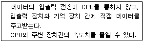
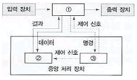
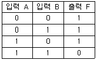
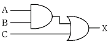
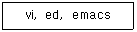
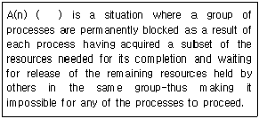
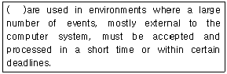

정보처리기능사 (2010-10-03 기출문제)
1과목: 전자 계산기 일반
1. 다음이 설명하고 있는 데이터 입출력 방식은?

- DCA
- DMA
- Multiplexer
- Channel
(정답률: 59%)

2. 컴퓨터 시스템의 중앙처리장치를 구성하는 하나의 회로로써 산술 및 논리 연산을 수행하는 장치는?
- Arithmetic Logic Unit
- Memory Unit
- I/O Unit
- Associative Memory Unit
(정답률: 76%)
3. 제어논리장치(CLU)와 산술논리연산 장치(ALU)의 실행순서를 제어하기 위해 사용되는 레지스터는?
- 누산기(accumulator)
- 프로그램 상태 워드(program Status World)
- 명령 레지스터(instruction register)
- 플래그 레지스터(flag register)
(정답률: 55%)
4. 번지(address)로 지정된 저장위치(storage location)의 내용이 실제 번지가 되는 주소지정번지는?
- 간접지정 방식
- 완전지정방식
- 절대지정방식
- 상대지정방식
(정답률: 49%)
5. JK플립플롭(flip flop)에서 보수가 출력되기 위한 J, K의 입력상태는?
- J=1, K=0
- J=0, K=1
- J=1, K=1
- J=0, K=0
(정답률: 81%)
6. 2진수 (10001010)를 2의 보수로 옳게 표현한 것은?
- 01110101
- 01110110
- 10001011
- 10000110
(정답률: 62%)
7. 하나의 명령어를 중앙 처리 장치에서 처리하는데 포함된 일련의 동작들을 총칭하여 명령어 주기(Instruction Cycle)라 하는데 명령어 주기에 속하지 않는 것은?
- Branch Cycle
- Fetch Cycle
- Indirect Cycle
- Interrupt cycle
(정답률: 53%)
8. 주기억장치, 제어장치, 연산장치 사이에서 정보가 이동 되는 경로이다. 빈 부분에 알맞은 장치는?

- ① 제어장치 ②주기억장치 ③연산장치
- ① 주기억장치 ②연산장치 ③제어장치
- ① 주기억장치 ②제어장치 ③연산장치
- ① 제어장치 ②연산장치 ③주기억장치
(정답률: 76%)
9. 연산을 자료의 성격에 따라 나눌 때, 논리적 연산에 해당하지 않는 것은?
- ROTATE
- AND
- MULTIPLY
- COMPLEMENT
(정답률: 46%)
10. 진리표가 다음 표와 같이 되는 논리 회로는?

- AND 게이트
- OR 게이트
- NOR 게이트
- NAND 게이트
(정답률: 76%)
11. A·(A·B+C)를 간략화 하면?
- A
- B
- C
- A·(B+C)
(정답률: 80%)
12. 채널은 어떤 장치에서 명령을 받는가?
- 기억장치
- 출력장치
- 입력장치
- 제어장치
(정답률: 66%)
13. 여러 개의 입력정보 (2n)중에서 하나를 선택하여 한 곳으로 출력시키는 조합 논리 회로는?
- 반가산기
- 멀티플렉서
- 디멀티플렉서
- 인코더
(정답률: 53%)
14. 연산자의 기능과 거리가 먼 것은?
- 주소 지정 기능
- 제어기능
- 함수연산 기능
- 입출력 기능
(정답률: 54%)
15. 다음과 같은 논리회로에서 A=1, B=1, C=0 일 때, X로 출력되는 값은?

- 0
- 1
- 10
- 11
(정답률: 81%)
16. 프로그램들이 기억장치 내의 임의의 장소에 적재될 수 있도록 조정하는 작업을 재배치(relocation)라 하는데 이 기능을 수행하는 재배치 로더(loader)의 역할이 아닌 것은?
- 기억장소 할당
- 목적 프로그램의 기호적 호출 연결
- 원시 프로그램을 읽어서 명령어를 해석
- 기계어 명령들을 기억 장치에 적재
(정답률: 71%)
17. 연산장치에서 연산결과에 대한 부호를 저장하는 것은?
- 가산기
- 기억 레지스터
- 상태 레지스터
- 보수기
(정답률: 41%)
18. EBCDIC코드의 존(Zone) 코드는 몇 비트로 구성되어 있는가?
- 3
- 4
- 5
- 6
(정답률: 82%)
19. 입력장치로만 나열된 것은?
- 키보드, OCR, OMR, 라인프린터
- 키보드, OCR, OMR, 플로터
- 키보드, 라인프린터, OMR, 플로터
- 키보드, OCR, OMR, MICR
(정답률: 67%)
20. 8비트 컴퓨터에서 10진수 -13을 부호화 절대치 방식으로 표현한 것은?
- 10001101
- 10001110
- 11111110
- 01111101
(정답률: 58%)
2과목: 패키지 활용
21. 스프레드시트 작업에서 반복되거나 복잡한 단계를 수행하는 작업을 일괄적으로 자동화시켜 처리하는 방법에 해당하는 것은?
- 매크로
- 정렬
- 검색
- 필터
(정답률: 84%)
22. 스프레드시트의 입력된 자료에서 사용자가 원하는 레코드만을 선택하여 표시하는 기능은?
- 필터
- 슬라이드
- 셀
- 개요
(정답률: 78%)
23. 도메인에 대한 설명으로 가장 적합한 것은?
- 릴레이션을 표현하는 기본 단위
- 튜플들의 관계를 표현하는 범위
- 튜플들의 구분할 수 있는 범위
- 표현되는 속성 값의 범위
(정답률: 64%)
24. SQL에서 테이블의 price을 기준으로 오름차순 정렬하고자 할 경우 사용되는 명령은?
- SORT BY price ASC
- SORT BY price DESCM
- ORDER BY price ASC
- ORDER BY price DESC
(정답률: 74%)
25. SQL에서 테이블 구조를 정의, 변경, 제거하는 명령을 순서대로 옳게 나열한 것은?
- CREATE, MODIFY, DELETE
- MAKE, MODIFY, DELETE
- MAKE, ALTER, DROP
- CREATE, ALTER, DROP
(정답률: 74%)
26. 프리젠테이션에서 사용하는 하나의 화면은?
- 슬라이드
- 매크로
- 개체
- 셀
(정답률: 84%)
27. 데이터베이스관리시스템(DBMS: Databases Management System)의 주요 기능에 속하지 않는 것은?
- 관리 기능
- 정의 기능
- 조작 기능
- 제어 기능
(정답률: 66%)
28. 관계데이터베이스에서 속성(Attribute)의 수를 의미하는 것은?
- 카디널리티(Cardinality)
- 도메인(Domain)
- 차수(Degree)
- 릴레이션(Relation)
(정답률: 58%)
29. SQL 명령어 중 데이터 정의문(DDL)에 해당 하는 것은?
- UPDATE
- CREATE
- SELECT
- DELETE
(정답률: 71%)
30. DBMS에 대한 설명으로 틀린 것은?
- 데이터 보안성 보장
- 데이터 공유
- 데이터 중복성 최대화
- 데이터 무결성 유지
(정답률: 81%)
3과목: PC 운영 체제
31. 스풀링과 버퍼링에 대한 설명으로 틀린 것은?
- 스풀링은 저속의 입출력장치와 고속의 CPU간의 속도 차이를 해소하기 위한 방법이다.
- 버퍼링은 송신자와 수신자의 속도 차이를 해결하기 위하여 사용한다.
- 버퍼링은 수신자와 송신자의 속도 차이를 해결하기 위하여 사용한다.
- 버퍼링은 서로 다른 여러 작업에 대한 입출력과 계산을 동시에 수행한다.
(정답률: 66%)
32. 도스(MS-DOS)에서 “config.sys” 파일과 “autoexec.bat"파일의 수행을 사용자가 선택하여 실행하려고 하는 경우 사용하는 기능키(Function key)는?
- F4
- F5
- F7
- F8
(정답률: 61%)
33. 다음 UNIX 명령어에 대한 기능으로 옳은 것은?

- 컴파일
- 로더
- 통신 지원
- 문서 편집
(정답률: 67%)
34. CPU 스케줄링 방법 중 우선순위에 의한 방법의 단점은 무한정지(indefinite blocking)와 기아(starvation)현상이다. 이 단점을 해결하는 방안으로 가장 적합한 것은?
- 순환할당
- 다단계 큐 방식
- 에이징(aging) 방식
- 최소작업 우선
(정답률: 50%)
35. 다음 문장의( )에 알맞은 용어는?

- processing
- deadlock
- operating system
- system call
(정답률: 55%)
36. 비선점(Non-preemptive) 프로세스 스케줄링 방식에 해당 하는 것은?
- SJF, SRT
- SJF, FIFO
- Round-Robin, SRT
- Round-Robin, SJF
(정답률: 56%)
37. "윈도98"에서 보조프로그램의 구성에 해당 되는 것은?
- 녹음기
- 계산기
- 매체 재생기
- CD 재생기
(정답률: 62%)
38. 다중 프로그래밍 환경에서 CPU가 주기억장치 내부 프로그램을 실행하는데 걸리는 시간보다 페이지 부재에 따른 페이지 대체에 많은 시간을 보내게 됨으로써 전체 컴퓨터 시스템의 성능이 급격히 저하되는 현상은?
- Workload
- Locality
- Thrashing
- Collision
(정답률: 50%)
39. 도스(MS-DOS)의 시스템 파일 중 감춤(Hidden) 속성의 파일로만 짝지어진 것은?
- COMMAND.COM, IO.SYS
- COMMAND.COM, MSDOS.SYS
- MSDOS.SYS, IO.SYS, COMMAND.COM
- MSDOS.SYS, IO.SYS
(정답률: 46%)
40. "윈도98"에서 “바로가기 아이콘”에 대한 설명으로 틀린 것은?
- 바로가기 아이콘을 삭제하면 원본 파일도 삭제된다.
- 원본 파일과 연결되어 있는 LNK 확장자를 가진다.
- 실행 파일뿐만 아니라 문서파일에 대한 바로가기 아이콘을 만들 수 있습니다.
- 바로가기 아이콘은 원본 파일의 위치를 기억하고 있다.
(정답률: 78%)
41. "윈도98"에서 도스창을 열어 작업한 후, 다시 윈도로 복귀하고자 할 때 도스창을 종료하는 방법은?
- “ESC"를 누른다.
- “ALT" + "F4"를 누른다.
- “CTRL" + "ENTER"를 누른다.
- “EXIT” 명령어를 입력하고 “ENTER”를 누른다.
(정답률: 57%)
42. 페이지 대체 알고리즘에서 계수기를 두어 가장 오랫동안 참조되지 않은 페이지를 교체할 페이지로 선택하는 것은?
- FIFO
- LRU
- LFU
- OPT
(정답률: 56%)
43. "윈도98"의 작업 표시줄에 관한 내용으로 옳은 것은?
- 작업표시줄에는 시작단추, 빠른 실행 도구모음, 실행중인 프로그램 목록, 표시기 등으로 구성된다.
- 작업 표시줄의 오른쪽에는 현재 시간과 각종 하드웨어 사용을 알 수 없다.
- 작업 표시줄 등록정보는 마우스 왼쪽 단추를 작업 표시줄의 빈 곳에서 클릭 하여야만 알 수 있다.
- 작업 표시줄은 모니터의 상하좌우 및 가운데 어느 곳이나 놓일 수 있다.
(정답률: 51%)
44. 도스 명령어 중 내부 명령어에 해당하는 것은?
- ATTRIB
- SORT
- FORMAT
- CLS
(정답률: 54%)
45. 컴퓨터 하드웨어와 사용자를 연결시켜 사용자로 하여금 컴퓨터 시스템을 이용, 응용 프로그램을 수행할 수 있도록 도와주는 필수적인 프로그램은?
- 컴파일러
- 응용 프로그램
- 문서편집 프로그램
- 운영체제
(정답률: 73%)
46. 도스(MS-DOS)에서 특정한 디렉터리 내의 모든 파일 및 하부 디렉터리까지 복사해주는 명령어는?
- COPY
- XCOPY
- FDISK
- SORT
(정답률: 71%)
47. UNIX에서 사용하는 쉘(Shell)이 아닌 것은?
- C Shell
- Bourn Shell
- DOS Shell
- Korn Shell
(정답률: 62%)
48. 다음 ( )안에 알맞은 용어는?

- Time-sharing systems
- Real-time operating systems
- Distributed operating systems
- Batch operating systems
(정답률: 48%)
49. "윈도98"에서 디스켓을 포맷할 때 포맷형식으로 선택할 수 없는 것은?
- 전체
- 빠른 포맷
- 삭제된 파일 복구
- 시스템과 파일만 복사
(정답률: 61%)
50. 운영체제를 제어 프로그램(Control program)과 처리 프로그램(processing program)으로 분류했을 때, 제어 프로그램에 해당하지 않는 것은?
- 감시 프로그램(Supervisor program)
- 데이터 관리 프로그램(data management program)
- 문제 프로그램(problem program)
- 작업 제어 프로그램(job control program)
(정답률: 63%)
4과목: 정보 통신 일반
51. 원거리에서 일괄처리를 수행하는 터미널(Terminal)은?
- 인텔리전트 터미널(Intelligent Terminal)
- 리모트 배치 터미널(Remote Batch Terminal)
- 키 엔트리 터미널(Key Entry Terminal)
- 논-인텔리전트 터미널(Non-Intelligent Terminal)
(정답률: 57%)
52. 다음 중 통신제어장치의 역할과 거리가 먼 것은?
- 통신회선과 중앙처리장치의 결합
- 중앙처리장치와 데이터의 송·수신 제어
- 데이터의 교환 및 축적제어
- 회선 접속 및 전송 에러 제어
(정답률: 36%)
53. 데이터 통신에서 사용되는 전송속도의 기본단위는?
- earlang
- db
- km/s
- bps
(정답률: 72%)
54. 분산된 터미널 또는 여러 컴퓨터들이 중앙의 호스트 컴퓨터와 집중 연결되어 있는 정보통신망의 구성 형태는?
- 루프형
- 스타형
- 그물형
- 나무형
(정답률: 56%)
55. 광통신 케이블의 전송방식에 이용되는 빛의 특성은?
- 회절
- 산란
- 흡수
- 전반사
(정답률: 68%)
56. FTP는 OSI 7계층 중 어느 계층에 속하는가?
- 데이터 링크 계층
- 네트워크 계층
- 세션 계층
- 응용 계층
(정답률: 46%)
57. 다음 중 데이터통신 교환방식이 아닌 것은?
- 회선 교환방식
- 메시지 교환방식
- 패킷 교환 방식
- 선로 교환방식
(정답률: 56%)
58. 변복조기의 역할과 거리가 먼 것은?
- 통신신호의 변환기라고 볼 수 있다.
- 디지털신호를 아날로그신호로 변환한다.
- 공중전화통신망에 적합한 통신신호로 변환한다.
- 컴퓨터신호를 광케이블에 적합한 광신호로 변환한다.
(정답률: 48%)
59. 전화용 동케이블과 비교하여 광케이블의 특성이 아닌 것은?
- 전송용량이 커서 많은 신호를 전송 할 수 있다.
- 케이블 간의 누화가 없다.
- 주파수에 따른 신호감쇠 및 전송 지연의 변화가 크다.
- 통신의 보안성이 우수하다.
(정답률: 57%)
60. 프로토콜의 기본적인 요소가 아닌 것은?
- 구문
- 의미
- 타이밍
- 처리
(정답률: 38%)